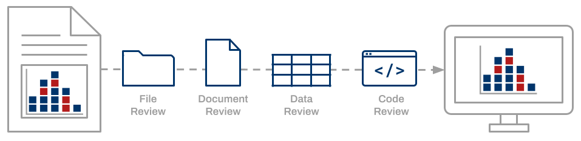
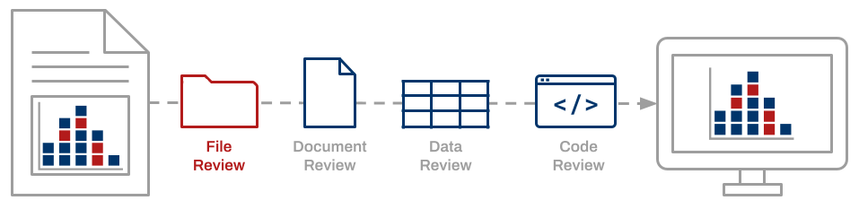
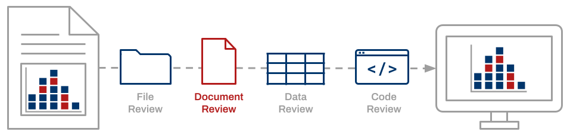
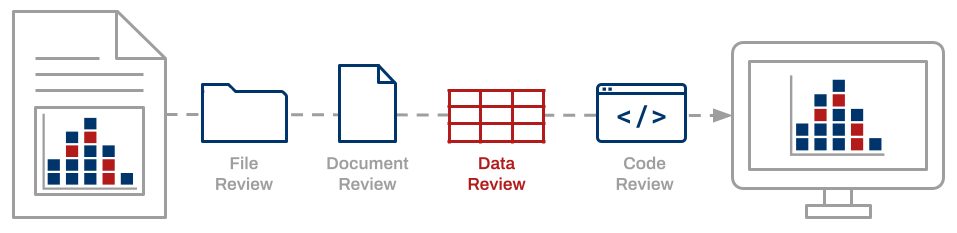
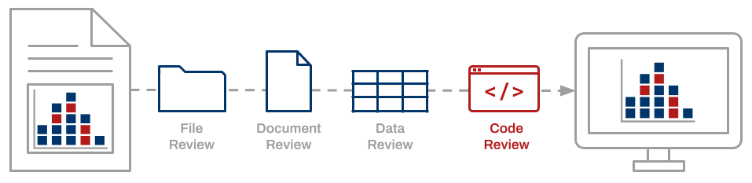

Empirical claims reported in a scientific journal typically rest upon data, software, code, documentation, and other digital artifacts that together constitute a “research compendium” (Gentleman & Lang, 2004). The ability to independently reproduce scientific findings based on computational methods as reported by the original author is imperative (NASEM, 2019). It allows confirmation of the research processes described by the original author and verification of the findings presented in the scientific publication. Enabling reproducibility over time requires proper curation of the research compendium.
“A data quality review is a process whereby data and associated files are assessed and required actions are taken to ensure files are independently understandable for informed reuse. This is an active process, involving a review of the files, the documentation, the data, and the code. We strongly believe that data quality cannot be realized without a data quality review” (Peer, Green, & Stephenson, 2014).
The Data Quality Review framework defines a comprehensive set of curation actions to be applied to compendium artifacts while considering the research context in which they were produced.

An inspection of the research compendium and its contents ensures that the compendium includes all files necessary to re-execute the computational workflow.

Documentation must be sufficient enough that an individual other than the original investigator can understand and repeat the analytical workflow.

A close examination of data files is necessary for identifying and addressing undefined, missing, or flawed data as well as issues of confidentiality or copyright.

Confirmation of the computational reproducibility of reported findings requires inspection and successful execution of the analysis code.